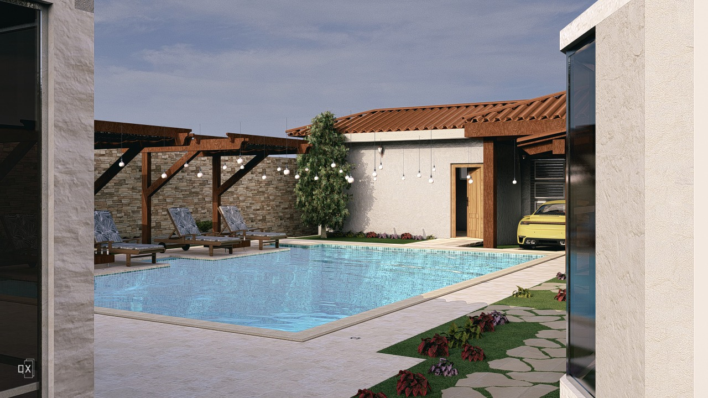
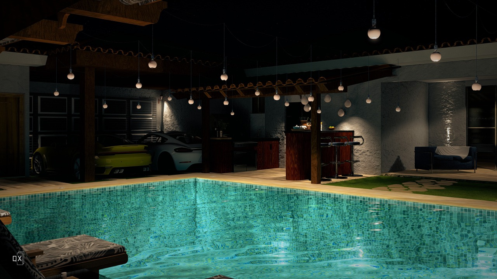
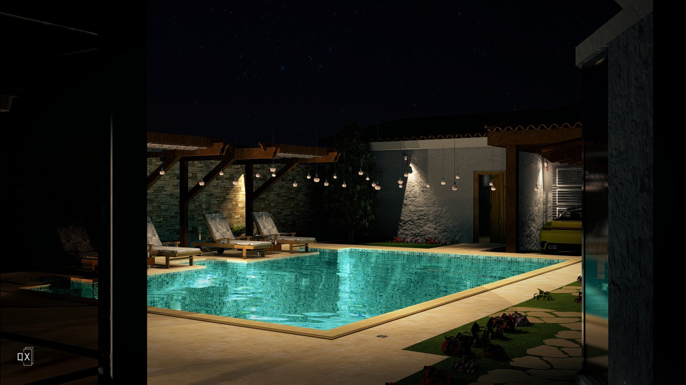

24 HOUR STUDENT RENDER CHALLENGESTUDIOQUIX

POOL DAY
24 HOUR STUDENT RENDER CHALLENGE
ONE
DAY.
POOL DAY / 24 HOUR STUDENT RENDER CHALLENGE
A courtyard pool under pergolas and string lights, framed by stone walls, a tiled roof and the garage beside it.
Produced for the 24 Hour Student Render Challenge, the series follows the same courtyard from daylight through dusk into night.

POOL / DAY01
POOL AND GARAGE / DUSK02

POOL AND GARAGE / NIGHT03

COURTYARD / NIGHT FRAME04